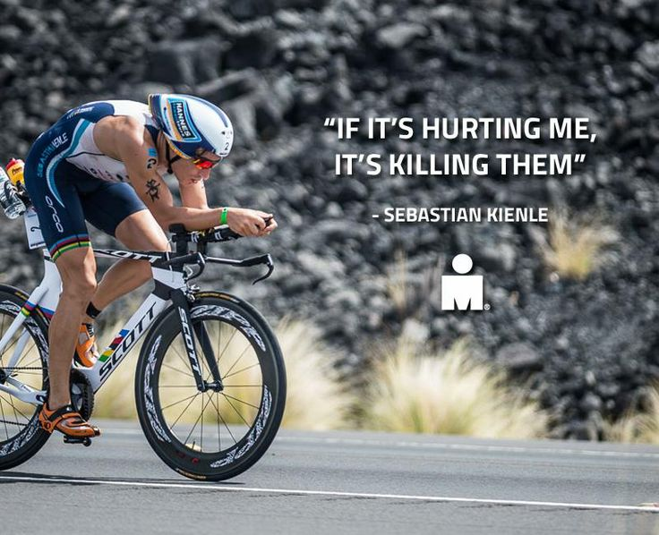

New Brands
More Info
Our LocationMore like our favourite surf spot
League Youth Cycling network is recognized as one of the leading global networks of bicycles and accessories. We have a diverse portfolio of brands available to the North American independent bicycle dealer that allows our dealers to purchase with ease by providing a one-stop-shopping experience. Each of our brands has a unique and complimentary product range and character allowing Cycling Sports Group to cater to each type of independent bicycle dealer.
Cyclo-cross Race of life begins...
Cyclo-cross originated as a sport for road racers during the off season, to vary their training during the cold months. Races typically take place in the autumn and winter (the international or World Cup season is September–January) and consist of many laps of a 2–3 km or 1–2 mile course featuring pavement, wooded trails, grass, steep hills, and obstacles requiring the rider to dismount, carry the bike and remount in one motion. Races for senior categories are generally between 30 minutes and an hour long, the distance varying depending on the conditions. The sport is strongest in traditional road cycling countries such as Belgium (Flanders in particular) and France.
Click
More About Us:
The races typically take place from spring through to autumn. Many riders from the northern hemisphere spend the winter in countries such as Australia, to compete or train. Professional races range from the three-week "Grand Tour" stage races such as the Tour de France, Giro d'Italia and the Vuelta a España to multi-day stage races such as the Tour de Suisse and Tour of California, to single day "Classics" such as the Tour of Flanders and Milan–San Remo. The longest one-day road race sanctioned by USA Cycling is Lotoja which covers the 206 miles (332 km) from Logan, Utah to Jackson, Wyoming. Criteriums are races based on circuits typically less than a mile in length and sometimes run for a set time (60 min, 90 min, etc.) rather than a specific distance. Criteriums are the most popular form of road racing in North America.
A List of Racing
Track cycling
Track cycling encompasses races that take place on banked tracks or velodromes. Events are quite diverse and can range from individual and team pursuits, two-man sprints, to various group and mass start races.
BMX
BMX takes place off-road. BMX races are sprints on purpose-built off-road single-lap tracks typically on single-gear bicycles. Riders navigate a dirt course of jumps and banked and flat corners.
Cycle speedway
Cycle speedway is bicycle racing on short outdoor dirt tracks, 70–90 m in length.There are several varieties; the main categories are cross-country and downhill but also 4X or four cross racing.
Learn More About Us
Cross-Country Cycling
Cross-country cycling is defined by the terrain on which it is performed. XC courses and trails consist of a mix of rough forest paths and singletrack ,smooth fireroads, and even paved paths connecting other trails.

AlleyCat Races
Alley cats almost always take place in cities, and are often organized by bicycle messengers. The informality of the organization is matched by the emphasis on taking part, rather than simple competition.